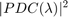
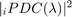
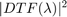
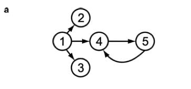
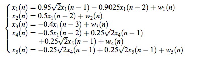
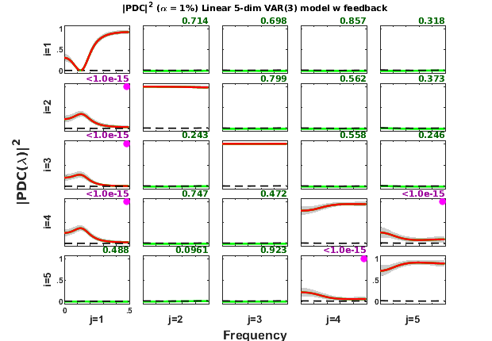
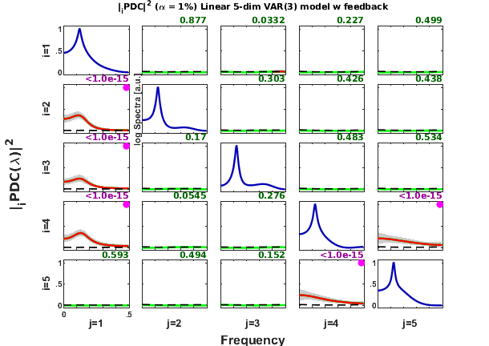
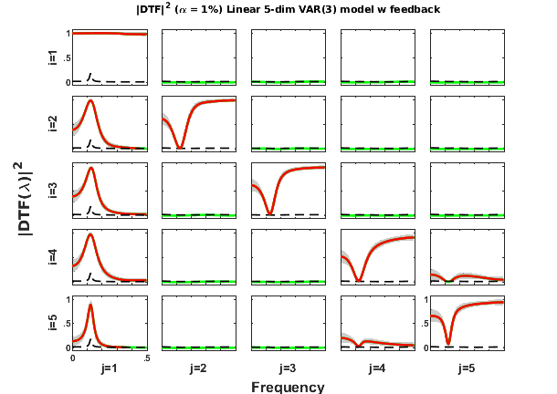
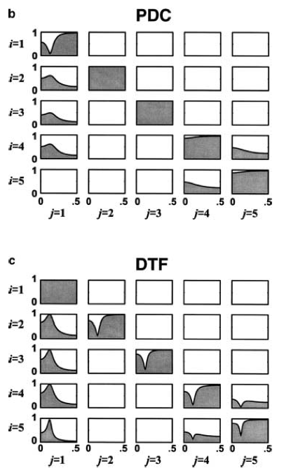

Contents
- BACCALA & SAMESHIMA 2001A, EXAMPLE 3, PAGE 468
- Data sample generation
- Interaction diagram
- Equation system
- MVAR model estimation
- Granger causality test (GCT) and instantaneous GCT
- Original PDC estimation
-  Matrix-Layout Plot
- information PDC estimation
-  Matrix Layout Plotting
- Original DTF estimation
-  Matrix-Layout Plot
- Result from the original article, Baccala & Sameshima (2001)
- Some remarks:
BACCALA & SAMESHIMA 2001A, EXAMPLE 3, PAGE 468
DESCRIPTION:
Example baccala2001_ex3.m:
Linear five-dimension VAR(3) model with feedback
Baccala & Sameshima. Partial directed coherence: a new concept in neural structure determination. Biol. Cybern. 84:463-474, 2001.
http://dx.doi.org/10.1007/PL00007990
Example 3 (pag.468) VAR(3) with feedback between x4 and x5
$x1-->x2 x1-->x3 x1-->x4 x4<-->x5$
clear; clc; format compact; format short
Data sample generation
nDiscard = 5000; % number of points discarded at beginning of simulation nPoints = 1000; % number of analyzed samples points u = fbaccala2001a_ex3(nPoints, nDiscard); % Model function chLabels = {'x_1';'x_2';'x_3';'x_4';'x_5'}; % or = []; fs = 1; % Normalized frequency.
======================================================================
Linear five-dimensional VAR[3] Model
Baccala & Sameshima. Biol.Cybern.84:463-74, 2001. Example 3 (pag.468)
x1-->x2 x1-->x3 x1-->x4 x4-->x5 x5-->x4
======================================================================
Interaction diagram

Figure 2a from Baccala & Sameshima. Biol. Cybern. 84:463-474, 2001.
Equation system

Data pre-processing: detrending and/or normalization options
[nChannels,nSegLength] =size(u); if nChannels > nSegLength u = u.'; [nChannels,nSegLength]=size(u); end for i=1:nChannels, u(i,:)=detrend(u(i,:)); end disp('Time series were detrended.');
Time series were detrended.
MVAR model estimation
maxIP = 30; % maximum model order to be considered. alg = 1; % 1: Nutall-Strand MVAR estimation algorithm criterion = 1; % 1: AIC, Akaike Information Criteria disp('Running MVAR estimation routine.') [IP,pf,A,pb,B,ef,eb,vaic,Vaicv] = mvar(u,maxIP,alg,criterion); disp(['Number of channels = ' int2str(nChannels) ' with ' ... int2str(nSegLength) ' data points; MAR model order = ' int2str(IP) '.']);
Running MVAR estimation routine. maxOrder limited to 30 IP=1 vaic=35642.158291 IP=2 vaic=34608.152052 IP=3 vaic=34558.200179 IP=4 vaic=34590.254028 Number of channels = 5 with 1000 data points; MAR model order = 3.
Testing for adequacy of MAR model fitting through Portmanteau test
h = 20; % GCT testing lag MVARadequacy_signif = 0.05; % VAR model estimation adequacy significance % level aValueMVAR = 1 - MVARadequacy_signif; % Confidence value for the testing flgPrintResults = 1; [Pass,Portmanteau,st,ths] = mvarresidue(ef,nSegLength,IP,aValueMVAR,h,... flgPrintResults);
====================================================================================================
MVAR RESIDURES TEST FOR WHITENESS
----------------------------------------------------------------------------------------------------
Good MAR model fitting! Residues white noise hypothesis NOT rejected.
Pass = 0.02
st = 390.786
Granger causality test (GCT) and instantaneous GCT
gct_signif = 0.01; % Granger causality test significance level igct_signif = 0.01; % Instantaneous GCT significance level flgPrintResults = 1; [Tr_gct, pValue_gct] = gct_alg(u,A,pf,gct_signif,flgPrintResults); [Tr_igct, pValue_igct] = igct_alg(u,A,pf,igct_signif,flgPrintResults);
====================================================================================================
GRANGER CAUSALITY TEST
----------------------------------------------------------------------------------------------------
Connectivity matrix:
NaN 0 0 0 0
1 NaN 0 0 0
1 0 NaN 0 0
1 0 0 NaN 1
0 0 0 1 NaN
Granger causality test p-values:
NaN 0.7093 0.6501 0.4259 0.4680
0 NaN 0.0303 0.6968 0.0158
0 0.6876 NaN 0.1364 0.9955
0 0.9244 0.6009 NaN 0
0.1936 0.7963 0.9683 0 NaN
====================================================================================================
INSTANTANEOUS GRANGER CAUSALITY TEST
----------------------------------------------------------------------------------------------------
Instantaneous connectivity matrix:
NaN 0 0 0 0
0 NaN 0 0 0
0 0 NaN 0 0
0 0 0 NaN 0
0 0 0 0 NaN
Instantaneous Granger Causality test p-values:
NaN 0.5764 0.7753 0.6145 0.3326
0.5764 NaN 0.4899 0.6037 0.6190
0.7753 0.4899 NaN 0.7337 0.2802
0.6145 0.6037 0.7337 NaN 0.8709
0.3326 0.6190 0.2802 0.8709 NaN
>>>> Instantaneous Granger Causality NOT detected.
====================================================================================================
Original PDC estimation
PDC analysis results are saved in c struct variable. See asymp_pdc.m or issue >> help asymp_pdc to see more detail.
nFreqs = 128; metric = 'euc'; % Euclidean metric = original PDC definition alpha = 0.01; c = asymp_pdc(u,A,pf,nFreqs,metric,alpha); c.Tragct = Tr_gct; % Assigning GCT results to c struct variable. c.pvaluesgct = pValue_gct;
Matrix-Layout Plot
flgPrinting = [1 1 1 2 3 0 1]; % overriding default setting flgColor = 0; w_max=fs/2; strTitle = ['Linear 5-dim VAR(3) model w feedback']; %'; ' datestr(now) ']']; vTitleBar = 'Baccala & Sameshima (2001a) Example 3'; [h1,~, ~] = xplot(vTitleBar,c,... flgPrinting,fs,w_max,chLabels,flgColor); xplot_title(alpha,metric,'pdc', strTitle);
information PDC estimation
iPDC analysis results are saved in d struct variable. See asymp_pdc.m
nFreqs = 128; metric = 'info'; % Choosing information PDC d = asymp_pdc(u,A,pf,nFreqs,metric,alpha); d.Tragct = Tr_gct; d.pvaluesgct = pValue_gct;
Matrix Layout Plotting
% 1 2 3 4 5 6 7 flgPrinting = [1 1 1 2 3 0 2]; % GCT and power spectra selection. % | | | | | | % blue | | | | | 7-- 2: Log spoectra; % dark-purple | | | | 5-- Print GCT p-values and dot-mark significant % or dark-green | | | | connectivity channel-pair 3: p-values + dot-mark % | | | | significant GCT % dashed-blue | | | 4-- Confidence interval 2: shaded-plot % red | | 3-- Significant PDC2 3: in red lines % dashed-black | 2-- Patnaik threshold level in black dashed-lines % green 1-- PDC2 in green lines or black w/o statistics, % see flgSignifColor bellow for line color selection. flgColor = 0; w_max=fs/2; [h2,~, ~] = xplot(vTitleBar,d,... flgPrinting,fs,w_max,chLabels,flgColor); xplot_title(alpha,metric,'pdc', strTitle);
Original DTF estimation
DTF analysis results are saved in e struct variable. See asymp_dtf.m for more detail.
metric = 'euc'; % Original DTF e = asymp_dtf(u,A,pf,nFreqs,metric,alpha);
Matrix-Layout Plot
flgColor = 0; flgScale = 1; flgMax = 'dtf'; flgSignifColor = 3; [h3,~,~] = xplot(vTitleBar,e,flgPrinting,fs,w_max,chLabels, ... flgColor,flgScale,flgMax,flgSignifColor); xplot_title(alpha,metric,'dtf',strTitle);
Result from the original article, Baccala & Sameshima (2001)
Figure 2, page 469 from article.

Some remarks:
- Check & compare Fig. 2b, page 468, Baccala & Sameshima (2001).
- Note that in the original article the amplitude PDC has been plotted, while here we preferred to plot squared-PDC.
This completes the Example 3 (Baccala & Sameshima, 2001)'